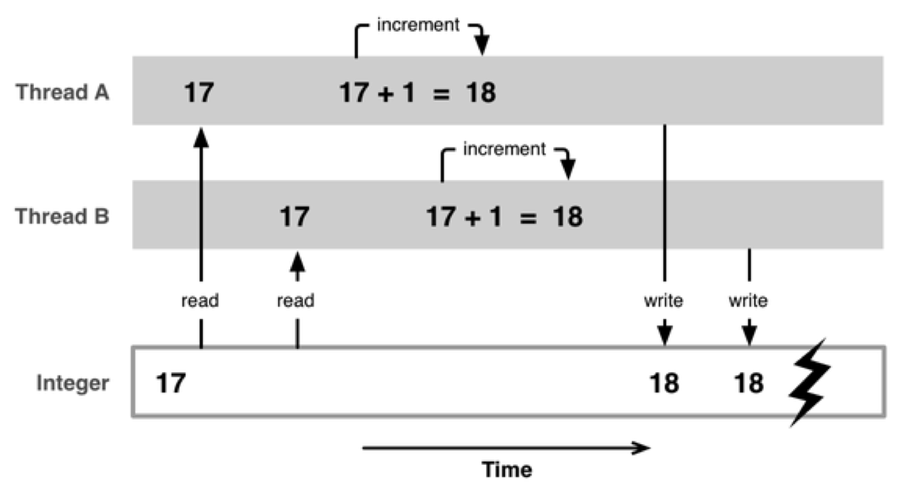
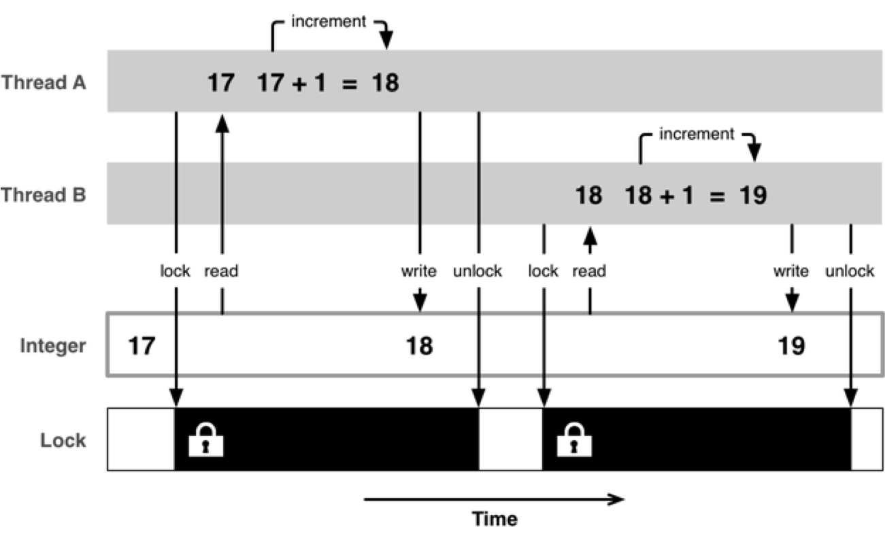

iOS 网络-NSURLSession
Thu 11 May 2017
by Little Captain
Task的类型

使用步骤
- 使用NSURLSession对象创建Task
- 执行Task
常用方法
- sharedSession : 获得共享的Session
- sessionWithConfiguration : 自定义Session
NSURLSessionTask
常见方法
- suspend, 暂停
- resume, 恢复
- cancel, 取消
常用属性
- error, 错误
- response, 响应
NSURLSessionDownloadTask
常见方法
- cancelByProducingResumeData
iOS 网络-NSURLConnection
Thu 11 May 2017
by Little Captain
作用
- 负责发送请求，建立客户端和服务器的连接
- 发送数据给服务器，并收集来自服务器的响应数据
常用相关类
NSURL
- 请求地址
- 有时必须进行百分号转码, 使用方法stringByAddingPercentEscapesUsingEncoding
NSURLRequest
- 一个NSURLRequest对象就代表一个请求
- 包含的信息
- 请求方法
- 请求头
- 请求体
- NSURL对象
- 请求超时
- ...
NSMutableURLRequest
- setTimeoutInterval
- 超过这个时间就算超时，请求失败
- 设置请求超时等待时间
- setHTTPMethod
- 设置请求方法
- GET或POST
- setHTTPBody
- 设置请求体
- setValue:forHTTPHeaderField:
- 设置请求头
使用步骤
1. 创建一个NSURL对象
- 设置请求路径
2. 创建一个NSURLRequest对象
- 设置
- NSURL对象
- 请求头
- 请求体
3. 发送请求
NSURLConnection常见的发送请求方法
同步请求
- sendSynchronousRequest
异步请求
根据对服务器返回数据的处理方式的不同，又可以分为2种
block回调 …
read moreiOS 网络-基础
Thu 11 May 2017
by Little Captain
学习网络编程的意义
- 在移动互联网时代，移动应用的特征
- 几乎所有应用都需要用到网络
- 只有通过网络跟外界进行数据交互、数据更新，应用才能保持新鲜、活力
- 如果没有了网络，也就缺少了数据变化，无论外观多么华丽，终将变成一潭死水
- 网络编程是一种实时更新应用数据的常用手段
- 网络编程是开发优秀网络应用的前提和基础
优秀移动应用的标准
- 良好的UI
- 良好的用户体验
- 实时更新的数据
App 分类
- 新闻
- 视频
- 音乐
- LBS
- 电商
- 社交
网络基本概念
Client
- 客户端
- 移动应用
Server
- 服务器
- 为客户端提供服务、提供数据、提供资源的机器
按照软件开发阶段来分，服务器可以大致分为2种
远程服务器
- 别名
- 外网服务器
- 正式服务器
- 使用阶段, 应用上线后使用的服务器
- 使用人群, 供全体用户使用
- 速度, 取决于服务器的性能、用户的网速
本地服务器
- 别名 …
RunLoop 就这一篇
Wed 10 May 2017
by Little Captain
概念
- 字面意思 : 运行循环
示意图

基本作用
- 保持程序的持续运行
- 处理App中的各种事件
- 触摸事件
- 定时器事件
- Selector事件
- …
- 节省CPU资源
- 提高程序性能, 该做事时做事，该休息时休息
- ...
如果没有 runloop
int main(int argc, char * argv[]) {
NSLog(@"execute main function"); // 程序开始
return 0; // 程序结束
}
如果有了 runloop
int main(int argc, char * argv[]) {
BOOL running = YES; // 程序开始
do {
// 执行各种任务 …多线程-NSOperation总结
Wed 10 May 2017
by Little Captain
概述
- 配合使用 NSOperation 和 NSOperationQueue 也能实现多线程编程
NSOperation 是个抽象类
- 不具备封装操作的能力，必须使用它的子类
- 使用 NSOperation 子类的方式有3种
- NSInvocationOperation
- NSBlockOperation
- 自定义子类继承 NSOperation
将任务封装到内部的 main 方法中
实现多线程的具体步骤
- 将需要执行的操作封装到一个 NSOperation 对象中
- 将 NSOperation 对象添加到 NSOperationQueue 中
- 系统会自动将 NSOperationQueue 中的 NSOperation 取出来
- 将取出的 NSOperation 封装的操作放到一条新线程中执行
具体使用
NSInvocationOperation
- 创建NSInvocationOperation对象
- alloc
- initWithTarget
- 调用start方法开始执行操作
- start
- 一旦执行操作，就会调用target的sel方法
- 注意
- 默认情况下，调用了start方法后并不会开一条新线程去执行操作，而是在当前线程同步执行操作 …
多线程-GCD总结
Wed 10 May 2017
by Little Captain
简介
- 全称是Grand Central Dispatch，可译为“宏大的中枢调度器”
- 纯C语言，提供了非常多强大的函数
GCD的优势
- 苹果公司为多核的并行运算提出的解决方案
- 自动利用更多的CPU内核
- 自动管理线程的生命周期
- 创建线程
- 调度任务
- 销毁线程
- 使用方便 : 程序员只需要告诉GCD想要执行什么任务，不需要编写任何线程管理代码
核心概念
任务
- 执行什么操作
队列
- 用来存放任务
类型
- 并发队列
- Concurrent Dispatch Queue
- 可以让多个任务并发（同时）执行
- 自动开启多个线程同时执行任务
- 并发功能只有在异步（dispatch_async）函数下才有效
- 串行队列
- Serial Dispatch Queue
- 让任务一个接着一个地执行
- 一个任务执行完毕后，再执行下一个任务
同步和异步
- 同步
- 只能在当前线程中执行任务
- 不具备开启新线程的能力
- 异步
- 可以在新的线程中执行任务
- 具备开启新线程的能力
容易混淆的术语 …
read more多线程-NSThread的使用
Wed 10 May 2017
by Little Captain
一个NSThread对象就代表一条线程
使用步骤
1. 创建线程
- init
- 具体使用: 自定义线程类继承自NSThread, 重写 main 方法(自定义任务、start 方法中会调用 main 方法)
- initWithTarget
2. 启动线程
- start
- 必须要启动, 不然任务不会执行
相关方法
主线程相关
- mainThread : 获取主线程
- isMainThread : 类方法
- isMainThread : 对象方法
其他方法
- currentThread : 获取当前所在线程
- setName : 设置线程名
- name : 获取线程名
其他创建线程方式
-
detachNewThreadSelector
- 创建线程后自动启动线程
- 分离出子线程
-
performSelectorInBackground
- 隐式创建并启动线程
- 后台线程
-
2种创建线程方式的优缺点
- 优点 : 简单快捷
- 缺点 : 无法拿到线程对象, 无法对线程进行更详细的设置
控制线程状态 …
read more多线程-线程间通信
Wed 10 May 2017
by Little Captain
概念
在1个进程中，线程往往不是孤立存在的，多个线程之间需要经常进行通信
具体应用
- 1个线程传递数据给另1个线程
- 在1个线程中执行完特定任务后，转到另1个线程继续执行任务
线程间通信常用方法
- performSelectorOnMainThread
- performSelector: onThread:
- GCD 中直接通过线程嵌套来实现
多线程-安全隐患
Tue 09 May 2017
by Little Captain
资源共享问题
- 1块资源可能会被多个线程共享，也就是多个线程可能会访问同一块资源
- 比如: 多个线程访问同一个对象、同一个变量、同一个文件
- 当多个线程访问同一块资源时，很容易引发数据错乱和数据安全问题
问题分析与解决
不加锁

安全隐患解决
加互斥锁

互斥锁使用
- @synchronized(锁对象) {// 需要锁定的代码}
- 锁定1份代码只用1把锁，用多把锁是无效的
- 使用注意点
- 注意加锁的位置
- 注意加锁的前提条件 : 多条线程共享同一块资源
- 注意加锁是需要代价的 : 需要耗费性能
- 加锁的结果 : 线程同步了
互斥锁的优缺点
- 优点 : 能有效防止因多线程抢夺资源造成的数据安全问题
- 缺点 : 需要消耗大量的CPU资源
什么时候使用互斥锁
- 多条线程抢夺同一块资源
线程同步
- 多条线程在同一条线上执行（按顺序地执行任务）
- 互斥锁，就是使用了线程同步技术
原子和非原子属性
atomic
- 原子属性
- 为setter方法加锁（默认就是atomic）
nonatomic
- 非原子属性
- 不会为setter方法加锁
原子和非原子属性的选择
nonatomic和atomic对比
- atomic …
多线程-iOS中的实现方案
Tue 09 May 2017
by Little Captain
| 方案 | 简介 | 语言 | 线程生命周期 | 使用频率 |
|---|---|---|---|---|
| pthread | 一套通用的多线程API 适用于Unix/Linux/Windows等系统 跨平台/可移植 使用难度大 |
C | 程序员管理 | 几乎不用 |
| NSThread | 使用更加面向对象 简单易用，可直接操作线程对象 |
OC | 程序员管理 | 偶尔使用 |
| GCD | 旨在替代NSThread等线程技术 充分利用设备的多核 |
C | 自动管理 | 经常使用 |
| NSOperation | 基于GCD（底层是GCD） 比GCD多了一些更简单实用的功能 使用更加面向对象 |
OC | 自动管理 | 经常使用 |